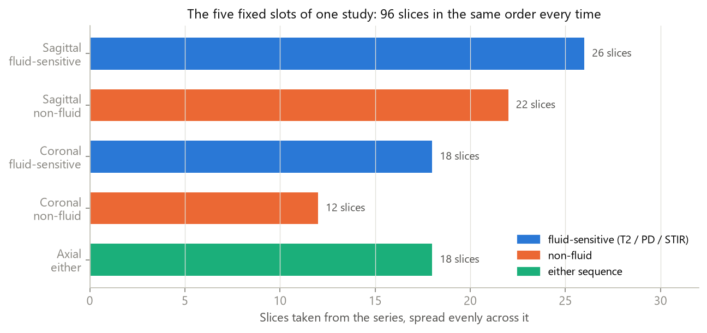
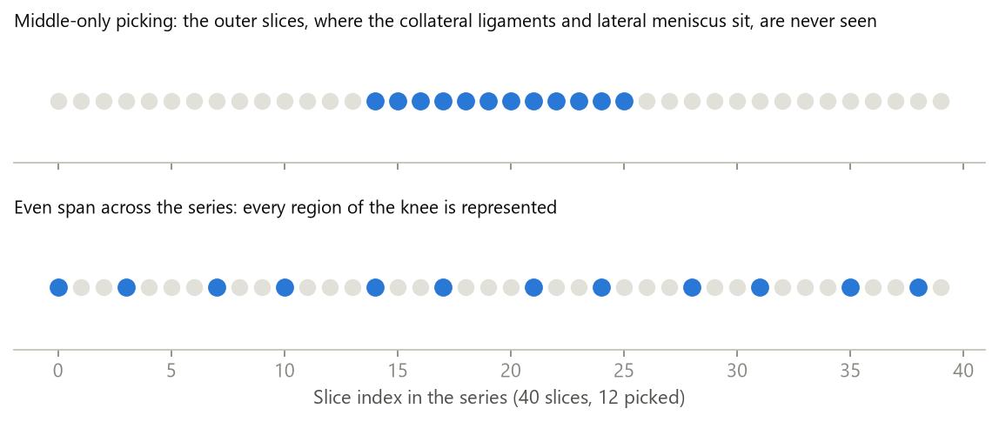
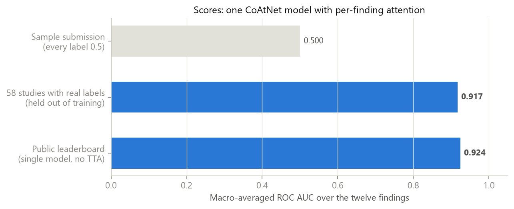

Knee Abnormality Detection - Twelve MRI Findings with One CoAtNet Model
A solution for the RSNA Knee Abnormality Detection competition on Kaggle: one CoAtNet model reads a knee MRI study, DICOM series in three planes, and scores twelve clinically important findings at once. 0.924 macro-averaged ROC AUC on the public leaderboard, single model, no ensembling or test-time augmentation.
Keywords

1. Introduction
The knee is the most imaged joint, and one MRI study can hold a dozen different problems: ligament tears, meniscal damage, cartilage loss, fractures, effusion. Radiologists are scarce and do not always agree, so the competition asks for a model that scores every finding at once. It is also the first RSNA challenge that pairs every study with its radiology report, so the report can teach the model during training even though it is not available at test time.
| Label | Finding | Label | Finding |
|---|---|---|---|
ACL | Anterior cruciate ligament injury | PF OA | Patellofemoral osteoarthritis |
MCL | Medial collateral ligament injury | Effusion | Joint effusion |
Medial Meniscus | Medial meniscus tear | Synovitis | Inflammation of the joint lining |
Lateral Meniscus | Lateral meniscus tear | Baker's | Baker's cyst |
Medial OA | Medial tibiofemoral osteoarthritis | Contusion | Bone bruise |
Lateral OA | Lateral tibiofemoral osteoarthritis | Fracture | Fracture |
Submissions are scored by the macro-averaged ROC AUC over the twelve labels, and they run as Kaggle notebooks: at most nine hours on one GPU, with internet disabled.
2. Goal
Goal
- Score all twelve findings from one model and one forward pass per study.
- Handle the real data as it comes: mixed DICOM transfer syntaxes, varying slice counts and resolutions, several scanner sites.
- Stay inside the competition limits of a single notebook, no internet and nine GPU hours, with no ensembling.
3. Approach
What made it hard
- 4,407 studies, but structured labels for only 58 of them; every other study arrives with a free-text report and nothing more.
- No two studies look alike: several series in different planes, a varying number of series, and a varying number of slices per series, yet the network needs a fixed-size input.
- The twelve findings are split across sequence types: fluid-sensitive sequences show swelling, effusion and acute injury; the others show anatomy and cartilage.
- Half a million slices in several transfer syntaxes have to be read fast enough to infer within nine hours.
flowchart LR
S[(Study
DICOM series, 3 planes)]:::store --> F[Five fixed slots
plane · sequence · count]:::process
F --> C[Crop 140 mm box
resize to 384 px]:::process
C --> W[42 three-slice windows]:::process
W --> B[CoAtNet backbone]:::agent
B --> A[Attention head
per finding ×12]:::agent
A --> O[12 probabilities
per study]:::output
3.1 Labels from the radiology reports
Only 58 studies carry structured labels, so the labels behind the model were made by reading each free-text report with a language model and turning it into twelve probabilities rather than twelve yes/no answers. A report that says a tear is suspected becomes a value near 0.8, not a 1, which is a fairer target than forcing a hedged sentence into a hard label. That gives 4,349 studies to train on. The 58 real-labelled studies are never trained on; they are the honest check.
3.2 A fixed input from studies that are all shaped differently
Each study fills five fixed slots, always in the same order, into one slice stack. Some slots prefer a fluid-sensitive series and some do not, because the findings are split across both kinds. A slot with no matching series stays zeros and is masked out, so the model skips it instead of being fed something misleading.

# Five fixed slots per study: (plane, prefer fluid-sensitive, slice count).
# A missing slot stays zeros and is masked out so the model skips it.
SLOTS = [
("Sagittal", 1, 26), # fluid-sensitive sagittal (T2 / PD / STIR): swelling, effusion, acute injury
("Sagittal", 0, 22), # non-fluid sagittal: anatomy and cartilage
("Coronal", 1, 18),
("Coronal", 0, 12),
("Axial", -1, 18), # axial, either sequence
]
Within a series, slices are taken evenly across the stack rather than from the middle: the collateral ligaments and the lateral meniscus sit in the outer slices, and cutting them was measurably costing accuracy on exactly those findings. Every slice is cropped to a 140 mm box using the pixel spacing from the DICOM header and then resized, so a knee fills the same fraction of the frame whether the scan was acquired at 0.3 or 0.5 mm per pixel.

# Even span across the series (not the middle): the periphery holds the collateral
# ligaments and the lateral meniscus.
n = len(files)
lo, hi = int(n * 0.02), int(n * 0.98) - 1
picks = np.linspace(lo, hi, k).round().astype(int)
# Crop a fixed 140 mm box using the DICOM pixel spacing, then resize, so scale carries
# no information the model has to learn.
cpx = int(round(CROP_MM / pixel_spacing)) # CROP_MM = 140.0
a = a[y0:y0 + cpx, x0:x0 + cpx]
a = cv2.resize(a, (IMG, IMG), interpolation=cv2.INTER_AREA)
3.3 How the model reads the stack
Three neighbouring slices go into the three channels of one image, so the network sees a little of what lies above and below the middle slice: most of the benefit of a 3D model at the cost of a 2D one. Each three-slice window passes through a CoAtNet backbone at 384 pixels, and the 42 windows of a study are combined by an attention layer with separate weights for each of the twelve findings. That is the part that matters most: a cruciate tear may be visible on two sagittal slices while osteoarthritis is spread across many coronal ones, and per-finding attention lets each finding draw on the slices that actually show it.
3.4 Running it inside the limits
Inference runs in half precision and retries a study in full precision if it fails, so no study is ever dropped. The backbone is loaded from attached weights rather than downloaded, and a fast DICOM reader decodes the common uncompressed little-endian sequences directly, falling back to pydicom for anything unusual.
# Scored run: verify the exact checkpoint, require a GPU, keep internet off.
assert torch.cuda.is_available(), "this scored pipeline requires CUDA"
assert sha256(weights) == "7e5315dad125b99fc65b340b3de41de628e9be51ff5835355dd61c86472244ef"
4. Results

Outcome
- 0.924 macro-averaged ROC AUC on the public leaderboard from a single model, no ensembling, no test-time augmentation.
- 0.9167 macro-AUC on the 58 studies that carry real structured labels and were held out of training entirely.
- Labels for the other 4,349 studies came from their radiology reports as soft probabilities, not hard 0/1 targets.
- One CoAtNet model over a fixed five-slot stack, per-finding attention across 42 windows per study, inside the nine-hour offline notebook limit.
5. Code and details on Kaggle
The main project and its technical details are uploaded to Kaggle, so please refer to the notebook to understand the work in detail.
- Inference notebook: loads the weights and writes the submission.
- Competition page: data, evaluation and timeline.
- Model weights: the trained checkpoint the notebook loads.
무릎 이상 탐지 - CoAtNet 모델 하나로 MRI 소견 12가지
Kaggle의 RSNA 무릎 이상 탐지 대회 솔루션이에요. CoAtNet 모델 하나가 무릎 MRI 검사, 세 평면의 DICOM 시리즈를 읽고 임상적으로 중요한 소견 12가지를 한 번에 점수화해요. Public Leaderboard 매크로 ROC AUC 0.924, 단일 모델, 앙상블과 TTA 없이요.
키워드
1. 소개
무릎은 가장 많이 촬영하는 관절이고, MRI 검사 하나에 다른 문제가 열두 가지씩 들어 있을 수 있어요. 인대 파열, 반월상연골 손상, 연골 소실, 골절, 삼출이요. 영상의학과 의사는 부족하고 판독이 늘 일치하지도 않아서, 대회는 모든 소견을 한 번에 점수화하는 모델을 요구해요. 또 모든 검사에 판독문이 붙어 있는 첫 RSNA 대회라서, 테스트 때는 없지만 학습 때는 판독문이 모델을 가르칠 수 있어요.
| 라벨 | 소견 | 라벨 | 소견 |
|---|---|---|---|
ACL | 전방십자인대 손상 | PF OA | 슬개대퇴 골관절염 |
MCL | 내측측부인대 손상 | Effusion | 관절 삼출 |
Medial Meniscus | 내측 반월상연골 파열 | Synovitis | 활막염 |
Lateral Meniscus | 외측 반월상연골 파열 | Baker's | 베이커 낭종 |
Medial OA | 내측 경대퇴 골관절염 | Contusion | 골 타박 |
Lateral OA | 외측 경대퇴 골관절염 | Fracture | 골절 |
제출은 12개 라벨의 매크로 평균 ROC AUC로 채점돼요. Kaggle 노트북으로 실행되고, GPU 한 장으로 최대 9시간, 인터넷은 꺼져 있어요.
2. 목표
목표
- 검사마다 모델 하나, 순전파 한 번으로 소견 12가지를 모두 점수화해요.
- 실제 데이터를 오는 그대로 다뤄요. 섞인 DICOM 전송 구문, 다른 슬라이스 수와 해상도, 여러 촬영 기관이요.
- 노트북 하나, 인터넷 없음, GPU 9시간이라는 대회 제한 안에서, 앙상블 없이 해요.
3. 접근
어려웠던 점
- 검사는 4,407건인데 구조화된 라벨은 58건뿐이에요. 나머지는 자유 형식 판독문만 있어요.
- 같은 모양의 검사가 없어요. 평면이 다른 시리즈가 여러 개이고, 시리즈 수도 시리즈당 슬라이스 수도 제각각인데, 네트워크는 고정 크기 입력이 필요해요.
- 12가지 소견이 시퀀스 종류에 따라 나뉘어요. 액체 민감 시퀀스는 부종, 삼출, 급성 손상을 보여 주고, 나머지는 해부 구조와 연골을 보여 줘요.
- 여러 전송 구문의 슬라이스 50만 장을 9시간 안에 추론할 만큼 빠르게 읽어야 해요.
flowchart LR
S[(검사
DICOM 시리즈, 3평면)]:::store --> F[고정 슬롯 5개
평면 · 시퀀스 · 개수]:::process
F --> C[140 mm 박스 크롭
384 px로 리사이즈]:::process
C --> W[3슬라이스 윈도 42개]:::process
W --> B[CoAtNet Backbone]:::agent
B --> A[소견별 Attention
Head ×12]:::agent
A --> O[검사당
확률 12개]:::output
3.1 판독문에서 만든 라벨
구조화된 라벨은 58건뿐이라서, 모델 뒤의 라벨은 판독문을 언어 모델로 읽어서 만들었어요. 예/아니오 12개가 아니라 확률 12개로요. 파열이 의심된다고 쓴 판독문은 1이 아니라 0.8 근처가 돼요. 애매한 문장을 억지로 하드 라벨로 만드는 것보다 공정한 목표예요. 그렇게 학습에 쓸 검사 4,349건이 생겨요. 진짜 라벨이 있는 58건은 학습에 쓰지 않고 정직한 확인용으로 남겨요.
3.2 모양이 다 다른 검사에서 고정 입력 만들기
검사마다 고정 슬롯 5개를 항상 같은 순서로 채워서 슬라이스 스택 하나를 만들어요. 액체 민감 시리즈를 우선하는 슬롯과 아닌 슬롯이 있어요. 소견이 두 종류에 나뉘어 있기 때문이에요. 맞는 시리즈가 없는 슬롯은 0으로 두고 마스크해서, 모델이 엉뚱한 걸 보는 대신 건너뛰게 해요.
# Five fixed slots per study: (plane, prefer fluid-sensitive, slice count).
# A missing slot stays zeros and is masked out so the model skips it.
SLOTS = [
("Sagittal", 1, 26), # fluid-sensitive sagittal (T2 / PD / STIR): swelling, effusion, acute injury
("Sagittal", 0, 22), # non-fluid sagittal: anatomy and cartilage
("Coronal", 1, 18),
("Coronal", 0, 12),
("Axial", -1, 18), # axial, either sequence
]
시리즈 안에서는 가운데가 아니라 전체에 고르게 퍼뜨려서 슬라이스를 골라요. 측부인대와 외측 반월상연골은 바깥쪽 슬라이스에 있어서, 그걸 잘라내면 바로 그 소견의 정확도가 눈에 띄게 떨어졌어요. 슬라이스마다 DICOM 헤더의 픽셀 간격으로 140 mm 박스를 잘라낸 뒤 리사이즈해요. 그래서 픽셀당 0.3 mm든 0.5 mm든 무릎이 화면의 같은 비율을 차지해요.
# Even span across the series (not the middle): the periphery holds the collateral
# ligaments and the lateral meniscus.
n = len(files)
lo, hi = int(n * 0.02), int(n * 0.98) - 1
picks = np.linspace(lo, hi, k).round().astype(int)
# Crop a fixed 140 mm box using the DICOM pixel spacing, then resize, so scale carries
# no information the model has to learn.
cpx = int(round(CROP_MM / pixel_spacing)) # CROP_MM = 140.0
a = a[y0:y0 + cpx, x0:x0 + cpx]
a = cv2.resize(a, (IMG, IMG), interpolation=cv2.INTER_AREA)
3.3 모델이 스택을 읽는 방법
이웃한 슬라이스 3장을 이미지 하나의 3채널에 넣어요. 그래서 네트워크가 가운데 슬라이스의 위아래를 조금씩 같이 봐요. 2D 모델의 비용으로 3D 모델 이점의 대부분을 얻는 거예요. 3슬라이스 윈도마다 384픽셀 CoAtNet Backbone을 지나고, 검사 하나의 윈도 42개는 소견 12가지마다 가중치가 따로 있는 Attention 층으로 합쳐져요. 이게 제일 중요한 부분이에요. 십자인대 파열은 시상면 두 장에 보이고 골관절염은 관상면 여러 장에 퍼져 있을 수 있는데, 소견별 Attention은 소견마다 실제로 그걸 보여 주는 슬라이스를 쓰게 해 줘요.
3.4 제한 안에서 돌리기
추론은 반정밀도로 돌고, 실패하면 그 검사만 전정밀도로 다시 시도해요. 그래서 빠지는 검사가 없어요. Backbone은 내려받지 않고 첨부한 가중치에서 불러오고, 빠른 DICOM 리더가 흔한 비압축 Little Endian 시퀀스를 바로 디코딩하고, 특이한 건 pydicom으로 넘겨요.
# Scored run: verify the exact checkpoint, require a GPU, keep internet off.
assert torch.cuda.is_available(), "this scored pipeline requires CUDA"
assert sha256(weights) == "7e5315dad125b99fc65b340b3de41de628e9be51ff5835355dd61c86472244ef"
4. 결과
결과
- Public Leaderboard 매크로 평균 ROC AUC 0.924. 단일 모델, 앙상블 없음, TTA 없음.
- 학습에서 완전히 뺀 진짜 라벨 58건에서 매크로 AUC 0.9167.
- 나머지 4,349건의 라벨은 판독문에서 만든 소프트 확률이고, 하드 0/1 목표가 아니에요.
- 고정 슬롯 5개 스택 위의 CoAtNet 모델 하나, 검사당 윈도 42개에 소견별 Attention, 9시간 오프라인 노트북 제한 안에서요.
5. 코드와 자세한 내용은 Kaggle에
메인 프로젝트와 기술적인 세부 내용은 Kaggle에 올려 두었어요. 작업을 자세히 이해하시려면 노트북을 참고해 주세요.